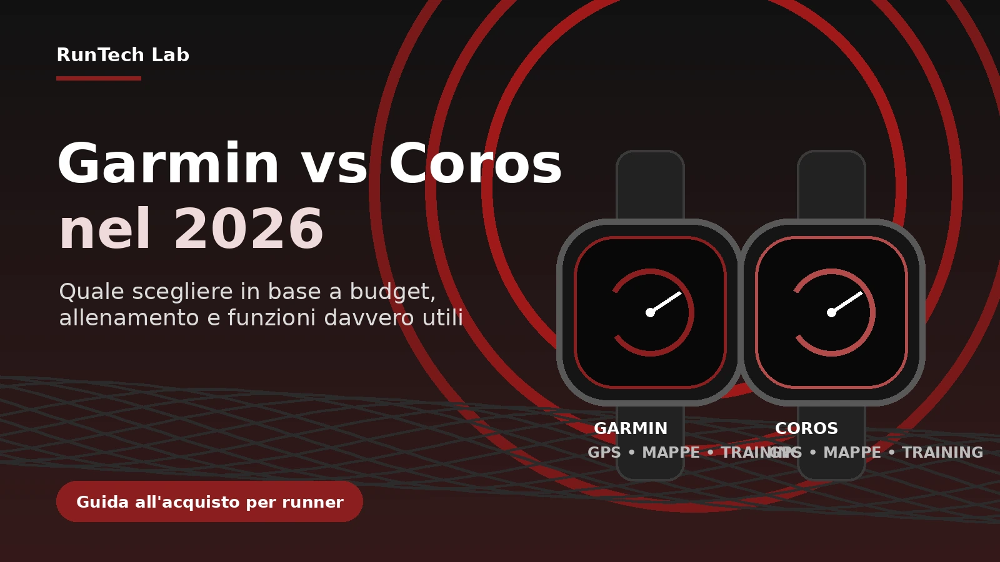

In breve
- Garmin ha più funzioni, più integrazioni, mappe più mature sui modelli alti e un ecosistema molto completo.
- Coros convince chi vuole semplicità, lunga autonomia e strumenti sportivi solidi senza pagare funzioni che non userà.
- Per molti runner amatoriali il vero confronto è tra Garmin Forerunner 570/970 e Coros PACE Pro/APEX 4.
- Se fai trail, lunghi, ultra o viaggi spesso, autonomia e navigazione pesano più delle notifiche smart.
- Il verdetto RunTech Lab: Garmin è la scelta più completa; Coros è spesso la scelta più razionale.
Prima domanda: che tipo di runner sei?
Prima di guardare schede tecniche, mappe, GPS multi-band e durata della batteria, serve una domanda più semplice: che uso farai davvero dell’orologio? Un runner che corre tre volte a settimana su strada ha esigenze molto diverse da chi prepara trail lunghi, maratone, ultramaratone o gare in montagna. Il rischio, con gli smartwatch sportivi moderni, è comprare un ecosistema intero quando in realtà userai sempre le stesse cinque funzioni: distanza, passo, frequenza cardiaca, allenamenti programmati e recupero.
Garmin tende a essere più forte quando cerchi un dispositivo completo anche fuori dall’allenamento: pagamenti, musica, mappe, report avanzati, funzioni smart e una piattaforma molto articolata. Coros è più diretto: meno dispersivo, spesso più leggero nella gestione quotidiana e molto focalizzato su allenamento, batteria e semplicità. Nessuno dei due è “migliore” in assoluto. La scelta intelligente è capire quale dei due ti evita più compromessi nella tua settimana reale.
Specifiche e modelli da considerare nel 2026
| Profilo runner | Garmin da valutare | Coros da valutare | Perché |
|---|---|---|---|
| Budget controllato | Forerunner di fascia media o modello precedente | PACE 3 / PACE Pro | Coros tende a offrire molte funzioni sportive con interfaccia semplice e autonomia interessante. |
| Runner strada evoluto | Forerunner 570 | PACE Pro | Entrambi hanno display moderno e metriche da allenamento, ma Garmin offre un ecosistema più completo. |
| Runner che vuole mappe e funzioni premium | Forerunner 970 / Fenix | APEX 4 | Qui contano navigazione, materiali, autonomia e qualità dell’esperienza outdoor. |
| Trail, lunghi, ultra | Fenix / Enduro / Forerunner 970 | APEX 4 / Vertix | Autonomia, robustezza e mappe diventano più importanti delle funzioni smart. |
Cosa cambia davvero tra Garmin e Coros
Garmin è l’ecosistema più ampio. Nel 2025 Garmin ha presentato Forerunner 570 e Forerunner 970 con display AMOLED, microfono e altoparlante integrati, Garmin Coach, report serale e strumenti di allenamento avanzati. Il Forerunner 970 aggiunge anche torcia LED e metriche come Running Tolerance, Running Economy e Step Speed Loss, pensate per runner che vogliono analizzare meglio carico e tecnica. Questo approccio rende Garmin molto potente, ma anche più complesso: se ami i dati, è un vantaggio; se vuoi solo correre, può diventare rumore.
Coros ha scelto una direzione diversa. Il PACE Pro porta AMOLED, mappe offline globali, 32 GB di memoria, batteria dichiarata fino a 38 ore in modalità All Systems GPS e fino a 31 ore in dual-frequency GPS. L’APEX 4 alza il livello per uso outdoor con materiali più robusti, mappe più dettagliate, speaker, microfono e un’impostazione pensata per trail e montagna. In pratica Coros prova a offrire molte funzioni sportive avanzate senza trasformare l’orologio in un piccolo smartphone da polso.
Budget: cosa scegliere se vuoi spendere il giusto
Se il budget è la variabile principale, Coros parte avvantaggiata. Non perché sia sempre economica, ma perché spesso concentra le funzioni più utili al runner in prodotti meno dispersivi. Il PACE Pro, per esempio, è interessante per chi vuole display AMOLED, mappe offline e buona autonomia senza salire direttamente nel territorio dei top di gamma Garmin. Per un runner amatoriale che si allena con criterio, questa è una proposta molto sensata.
Garmin però ha un vantaggio importante: la profondità della gamma. Puoi scegliere un modello precedente, un Forerunner intermedio o un top di gamma in base al budget. Il problema è che la gamma Garmin può confondere. Due orologi possono sembrare simili ma differire per mappe, musica, sensore, materiali, funzioni performance o autonomia. Se vuoi spendere bene, non comprare Garmin “perché è Garmin”: scegli il modello preciso in base alle funzioni che userai davvero.
Allenamento: chi ti aiuta meglio a migliorare?
Garmin è molto forte nella lettura del carico. Training Readiness, Training Status, HRV Status, Acute Load, suggerimenti giornalieri e report vari aiutano a interpretare meglio il momento dell’atleta. Per chi prepara mezze maratone, maratone o gare con una certa struttura, questo può essere un vantaggio concreto. Il rischio è diventare dipendenti dai numeri: se ogni mattina aspetti che sia l’orologio a dirti se puoi correre, forse stai delegando troppo.
Coros è meno “enciclopedica”, ma più lineare. L’esperienza tende a essere più pulita: pianificazione, carico, recupero, zone, autonomia e analisi sportiva senza troppe sovrapposizioni. Per molti runner è un bene. Se non vuoi passare dieci minuti dentro l’app dopo ogni allenamento, Coros può risultare più immediata. Se invece vuoi una lettura molto dettagliata del recupero, dell’impatto del carico e dell’andamento complessivo, Garmin resta più ricca.
Mappe, navigazione e trail
Se corri quasi sempre su strada, le mappe possono sembrare un lusso. Ma appena inizi a fare trail, lunghi in zone nuove o viaggi con l’orologio come guida, la navigazione diventa una funzione centrale. Garmin ha un’esperienza mappe molto matura sui modelli giusti, soprattutto nella fascia alta. Non tutti i Forerunner hanno lo stesso livello di navigazione, quindi il modello specifico conta più del marchio.
Coros ha recuperato molto terreno. PACE Pro offre mappe offline globali, mentre APEX 4 punta esplicitamente su mappe più dettagliate, nomi di sentieri e strade, navigazione turn-by-turn e uso outdoor più serio. Per chi corre trail e vuole lunga autonomia, Coros è diventata un’alternativa credibile. Garmin resta superiore come ecosistema complessivo, ma Coros non è più solo “l’orologio con tanta batteria”.
Autonomia: il vantaggio Coros è ancora reale?
Sì, ma va interpretato. Coros continua a essere molto competitiva sull’autonomia, soprattutto quando si ragiona su GPS, trail, lunghi e uso con poche distrazioni. PACE Pro dichiara valori importanti per un orologio AMOLED, mentre APEX 4 è pensato per chi vuole spingersi oltre la classica settimana di allenamento. Questo pesa molto se fai lunghi, weekend outdoor o gare dove non vuoi pensare alla ricarica.
Garmin non è debole sulla batteria, soprattutto salendo verso Fenix, Enduro o alcuni modelli premium. Anche Forerunner 570 e 970 hanno autonomie adeguate per la maggior parte dei runner. Però Garmin offre più funzioni che possono consumare batteria: schermo always-on, musica, mappe, notifiche, sensori, funzioni smart. Quindi il dato ufficiale va letto sempre in base all’uso reale. L’autonomia migliore non è quella massima in tabella, ma quella che ti lascia tranquillo nella tua settimana.
Funzioni smart: Garmin è più completo
Se vuoi un orologio sportivo che faccia anche da smartwatch, Garmin è avanti. Musica, pagamenti, notifiche, chiamate su modelli compatibili, app, widget e integrazioni rendono l’esperienza più ampia. È il marchio più adatto se vuoi un solo dispositivo per sport, vita quotidiana e funzioni connesse. Per chi viene da Apple Watch o smartwatch generalisti, Garmin può essere più familiare.
Coros è più essenziale. Questo può essere un limite o un vantaggio, dipende da te. Se vuoi pagare, rispondere, ascoltare musica e usare tante funzioni extra, Garmin è più adatto. Se invece vuoi un orologio sportivo che ti distragga poco, duri tanto e ti dia i dati essenziali per allenarti, Coros è più coerente. RunTech Lab vede questa differenza come una scelta di filosofia, non solo di scheda tecnica.
Pro e contro
| Garmin | Coros |
|---|---|
| Pro: ecosistema molto completo, app matura, funzioni smart, mappe avanzate sui modelli giusti, metriche di allenamento profonde. | Pro: autonomia forte, interfaccia più semplice, ottimo focus sportivo, buon rapporto funzioni/prezzo, esperienza meno dispersiva. |
| Contro: gamma complessa, prezzi alti sui modelli premium, rischio di pagare funzioni che non userai. | Contro: meno funzioni smart, ecosistema meno ricco, alcune analisi sono meno profonde rispetto a Garmin. |
Per chi ha senso Garmin
- Per chi vuole il pacchetto più completo tra sport, salute, mappe, notifiche, musica e funzioni smart.
- Per chi prepara gare con una programmazione strutturata e vuole tanti indicatori su carico, recupero e stato di forma.
- Per chi usa spesso mappe, percorsi, pagamenti, musica offline e integrazioni con altre piattaforme.
- Per chi non vuole sperimentare troppo e preferisce l’ecosistema più maturo e diffuso.
Per chi ha senso Coros
- Per chi vuole un orologio sportivo concreto, con molta autonomia e pochi fronzoli.
- Per chi corre trail, lunghi o gare dove batteria e semplicità contano più delle funzioni smart.
- Per chi vuole spendere in modo razionale e non pagare un ecosistema enorme che userà solo in parte.
- Per chi preferisce una piattaforma più pulita, facile da leggere e meno invadente nella vita quotidiana.
Alternative da considerare
Se Garmin e Coros non ti convincono, le alternative non mancano. Suunto resta interessante per outdoor e navigazione, soprattutto per chi ama un’esperienza più essenziale e resistente. Polar ha senso per chi cerca analisi fisiologiche e un approccio storico all’allenamento, anche se oggi soffre di più la concorrenza. Apple Watch Ultra può essere una scelta forte se vuoi il miglior smartwatch con buone funzioni sportive, ma per autonomia e allenamento puro resta diverso da Garmin e Coros.
La scelta non dovrebbe partire dal brand ma dal problema. Vuoi capire meglio il carico? Garmin. Vuoi autonomia e semplicità? Coros. Vuoi uno smartwatch quotidiano molto evoluto? Apple Watch. Vuoi outdoor essenziale? Suunto. La parola “migliore” ha poco senso senza il contesto del runner.
Errori da evitare
- Comprare il modello più costoso pensando che ti farà allenare meglio automaticamente.
- Guardare solo l’autonomia massima senza considerare GPS, mappe, musica e always-on display.
- Scegliere Garmin senza sapere quali funzioni differenziano davvero un Forerunner medio da uno premium.
- Scegliere Coros solo per risparmiare, ignorando che potresti perdere funzioni smart che per te sono utili.
- Fidarti dei dati senza ascoltare il corpo: gli smartwatch aiutano, ma non sostituiscono buon senso e progressione.
Verdetto RunTech Lab
Sintesi finale: nel 2026 Garmin resta la scelta più completa per chi vuole uno smartwatch sportivo totale, capace di seguire corsa, salute, mappe, recupero, funzioni smart e vita quotidiana. Coros è invece la scelta più razionale per chi vuole allenarsi bene, avere tanta autonomia e ridurre la complessità. Non è una sfida tra “premium” e “budget”: è una scelta tra ecosistema e concretezza.
Per chi ha senso: Garmin ha senso per il runner che vuole dati avanzati, funzioni smart, integrazioni e un’esperienza molto ricca. Coros ha senso per chi prepara gare, corre lunghi o trail, vuole batteria affidabile e preferisce un orologio sportivo più essenziale.
Per chi non ha senso: Garmin è meno adatto a chi si perde tra troppe metriche o vuole spendere il minimo possibile. Coros è meno adatto a chi cerca pagamenti, app, funzioni smart evolute e l’ecosistema più completo.
Valutazione pratica: se hai budget alto e vuoi un solo orologio per tutto, scegli Garmin. Se vuoi uno strumento sportivo serio, semplice e con ottima autonomia, scegli Coros. Per molti runner amatoriali evoluti, la scelta più intelligente non è il modello top, ma quello che userai davvero ogni settimana.
FAQ
Garmin è meglio di Coros per la maratona?
Garmin è spesso più completo per chi prepara una maratona con piani strutturati, metriche di recupero e analisi del carico. Coros però è più che sufficiente per molti runner, soprattutto se cerchi autonomia, semplicità e allenamenti programmati senza troppe funzioni extra.
Coros è adatto ai principianti?
Sì, ma dipende dal modello. Coros può essere ottimo per principianti motivati perché è semplice, sportivo e poco dispersivo. Se però vuoi più funzioni smart, musica, pagamenti e un’app più ricca, Garmin può essere più comodo.
Quale scegliere per il trail running?
Per trail e lunghi outdoor valuta Garmin Fenix, Forerunner 970 o Coros APEX 4. Garmin ha un ecosistema mappe e funzioni più ampio; Coros risponde con autonomia, leggerezza d’uso e navigazione sempre più convincente.
Serve davvero spendere oltre 600 euro?
Non sempre. Se corri su strada e vuoi solo allenarti meglio, un modello intermedio può bastare. La fascia premium ha senso se usi mappe, materiali migliori, funzioni avanzate, trail lunghi o vuoi un dispositivo unico per sport e quotidianità.
Nota editoriale e fonti
Questo articolo è stato costruito confrontando schede ufficiali, manuali prodotto e documentazione dei produttori disponibili al 7 giugno 2026. I prezzi possono cambiare rapidamente; prima dell’acquisto conviene verificare il listino aggiornato e le offerte disponibili.